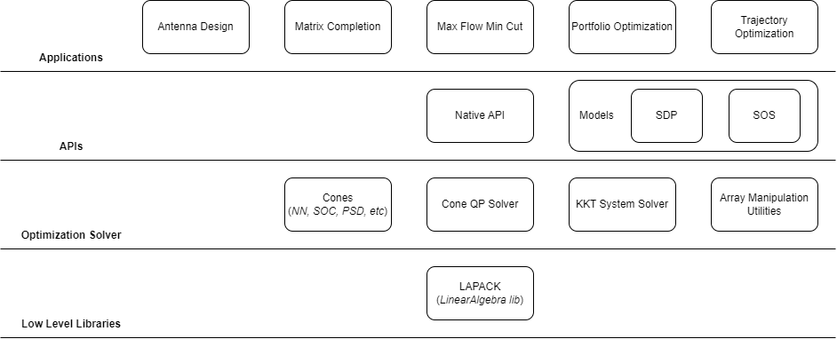

Design
Features
- Solves LP (Linear Programming), QP (Quadratic Programming), SOCP (Second Order Cone Programming) and SDP (Semidefinite Programming) problems
- Supports Nonnegative Orthant, Second Order and Positive Semidefinite cone types
- Minimal project dependencies (mainly LAPACK)
- Implements common array manipulation operations to reduce complexity in defining optimization problems
- Can define Semidefinite and Sum of Squares problems with ease using predefined models
- Modular (by design) so users can bring their own KKT (Karush Kuhn Tucker) solver to utilize sparsity patterns and problem structure for optimal solver performance
- Open source (MIT License)
- Several scientific and engineering examples ready to be extended for real world application
- Native conic solver interface, reduce overhead associated with using dependencies when defining an optimization problem
Components
All example applications extend from either the native or model based APIs. The rank minimization (matrix completion) example (for example) uses the SDP model and trajectory optimization example uses the SOS model.
You may need to install further dependencies to run the specific examples. This modular approach allows the optimization solver to be performant, extensible for future emerging applications and versatile so it is suitable for solving large-scale problems or real-time embedded problems for example.
The high-level component diagram (see below) can serve as a guide for users and developers working with the project codebase.
